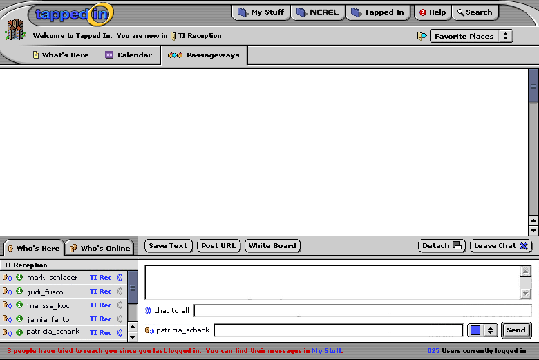

Slick! Btw, what's your conception of how a room looks with chat collapsed these days?"
I like the way the color (yellow) links the tab to the information below. That seems very clear to me. In terms of the linking the room nav bars to the room info, I think it's clearer... I'm only a little unsure because I didn't have a problem with that before and may not be the best person to ask!
In terms of the whisper (to be be referred to from now on as private msssage) input line on the chat... that's not clear to me the icon there is about private messages... What do others think?\r\n\r\nOne other thing, we talked about needing a chat tools palette... We're still working on this, but I'm wondering if Save Text would be one of the buttons on the chat tool palette.
So I've made some rather drastic changes to help solve some of the ongoing problems with the UI, along with revising icons (they're all ours now!). The main changes are: minimizing screen real estate for UI, making connection between room info and room nav more obvious, and showing clearly that the 'information' overlay (my stuff subnav and content) is a pseudo-pop-up window that covers the room. Shweew...
